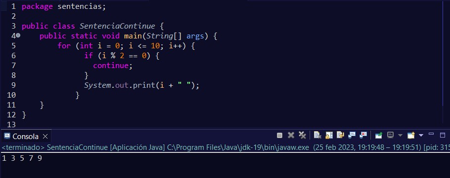
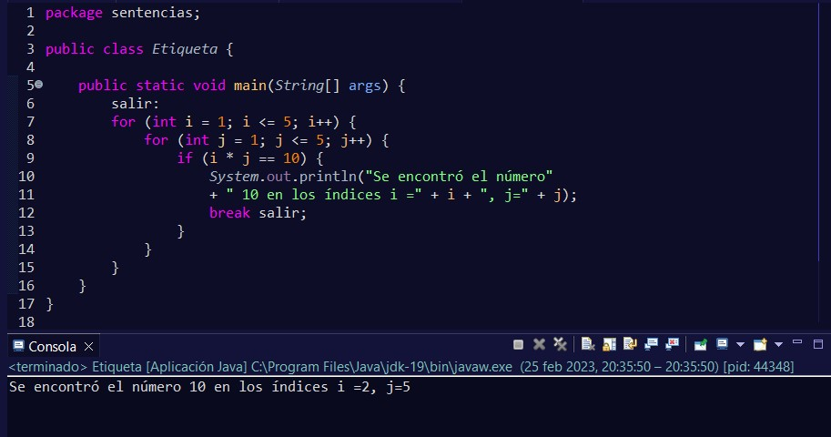
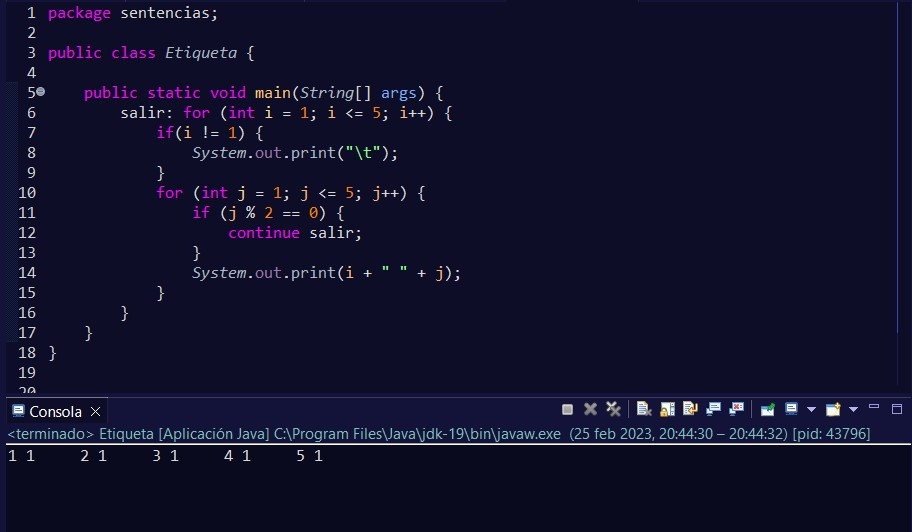

A veces necesitaremos hacer que nuestros bucles se interrumpan cuando se cumpla una determinada condición. O que un determinado bloque de sentencias no se ejecute pero que continúe el bucle hasta el final.
Ya vimos que con las estructura switch, esta sentencia era la responsable de finalizar la ejecución de ésta. Pero también es posible usarlo con while, do-while o for.
Esta sentencia también se puede utilizar en los bucles for, while y do-while, pero a diferencia de la anterior, no finaliza el bucle, sino que salta esa vuelta y continúa con la siguiente vuelta.
Como se puede ver, cada vez que se encuentra con un número par, sale del bucle y continúa con la siguiente vuelta.
Cuando tenemos bucles anidados y nuestra intención es la de finalizar completamente la estructura, podremos utilizar etiquetas.
Su forma de utilizar es sencilla se coloca el identificador que queramos a nuestra etiqueta terminado con dos puntos. Después, donde queremos que termine el bucle, colocaremos la etiqueta
También podemos usar la etiqueta en la sentencia continue.
En este ejemplo, como vemos, se está comportando igual que si hubiéramos utilizado break sin etiqueta.
Aunque las etiquetas pueden resultar útiles en algunas situaciones, podría hacer que el código sea más difícil de leer y comprender. Por lo que se deben de usar con moderación y solo cuando mejore la legibilidad del código.